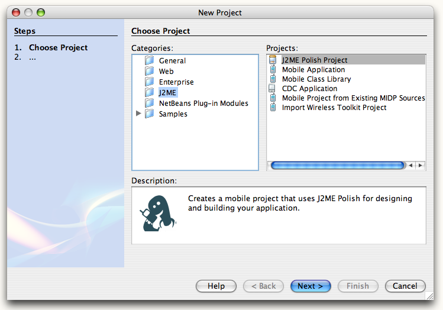
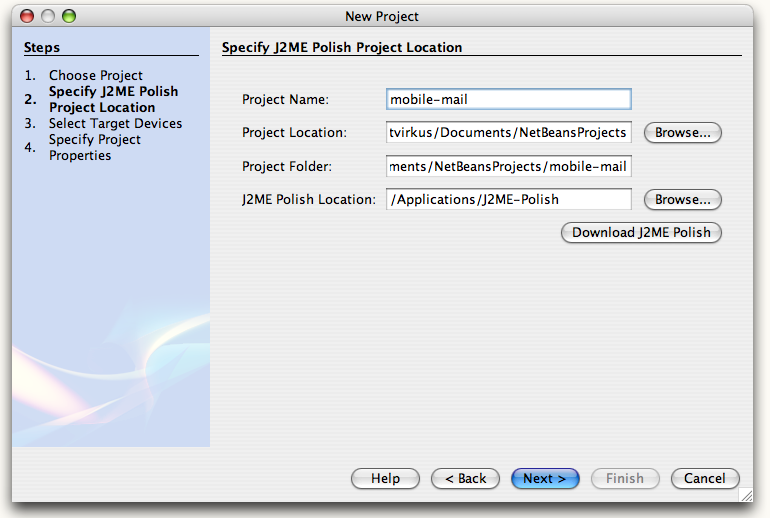
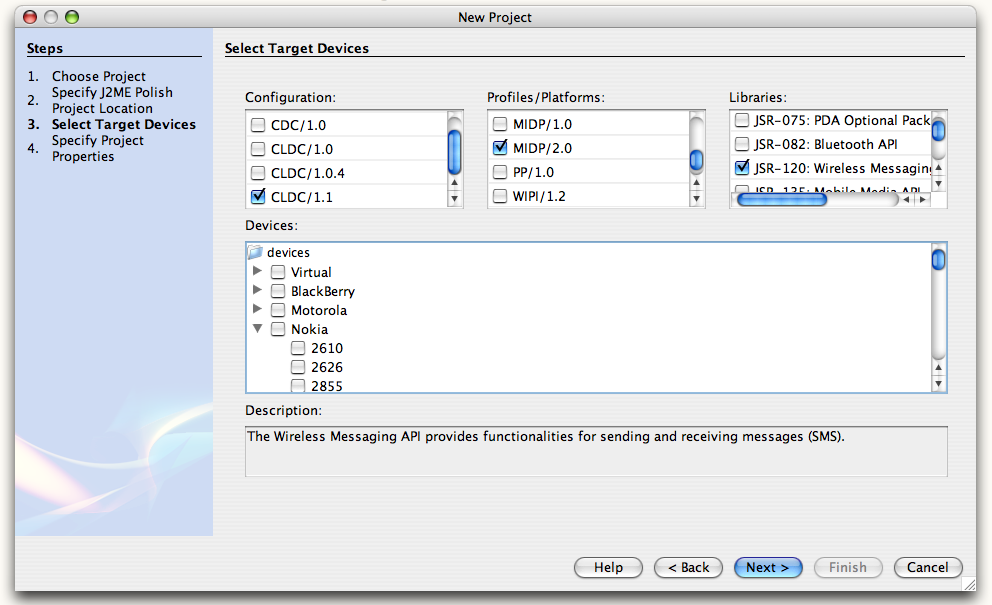
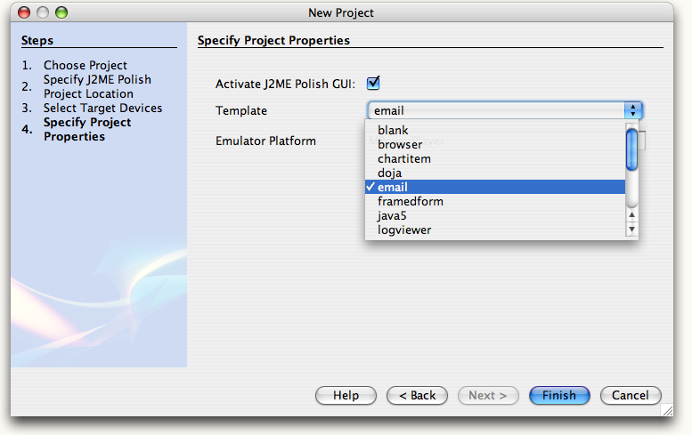
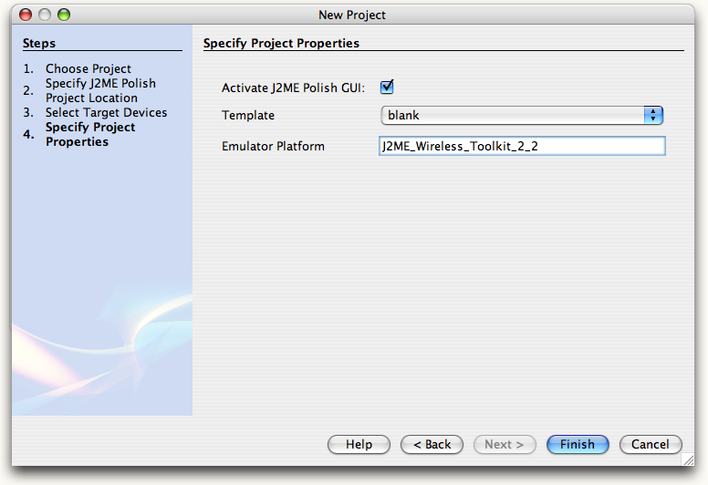
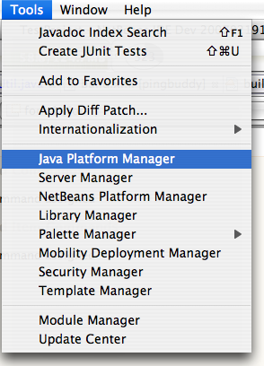
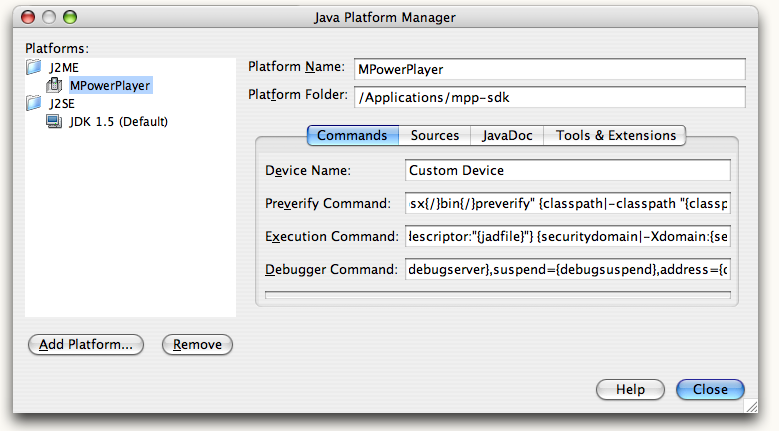

To create a new J2ME Polish project within NetBeans just select File > Project > Mobile (or J2ME) > J2ME Polish. The following details help you to set up a new project.
Select File > Project > Mobile (or J2ME) > J2ME Polish.

Specify the project's name and the installation directory of J2ME Polish.

Select the devices that you want to target in your project. You can use the platform, configuration and library selectors
to limit the number of devices:

Choose the template for your project (use "blank" for an empty project):

You also need to specify the Emulator Platform, for NetBeans 5.5 this is usally J2ME_Wireless_Toolkit_2_2.

You can set up Emulator Platform by choosing Tools > Java Platform Manager > J2ME. Note that the Emulator Platform is needed by the
Mobility Pack, not by J2ME Polish. J2ME Polish will use emulators that are either installed in their default location or which have
been specified in ${polish.home}/global.properties.

Now J2ME Polish creates a new project based on your settings. Run the project by pressing F6, debug by pressing F5 and build for all devices by pressing F11. Learn more about running, debugging and building in NetBeans here.
<%include end.txt %>